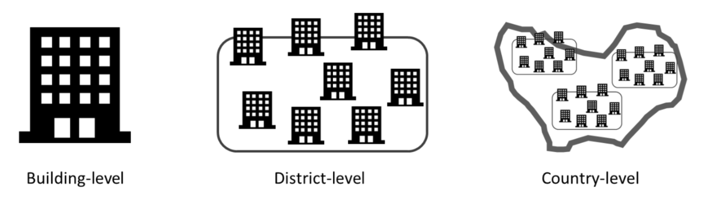

The first ACM BuildSys 2022 tutorial on electricity demand forecasting
Using data and machine learning to forecast energy demand: scaling from buildings to districts and countries
November 9-10, 2022, Boston, Massachusetts, USA
Hussain Kazmi1, Chun Fu2
1KU Leuven, Belgium
2National University of Singapore, Singapore
What is this tutorial about?
This tutorial is aimed at energy analysts, engineers, and researchers who want to learn more about machine learning algorithms that can be used to predict energy demand on several aggregation levels, ranging from the building level to districts and entire countries. At each of these aggregation levels, different challenges are faced by the load forecaster. We will demonstrate how aggregation levels as well as different forecasting algorithms and feature pipelines affect forecasting performance, and how these should be utilized in practice for best results. The tutorial will also include a collaborative coding session to offer participants a chance to practice demonstrated skills on datasets at various aggregation scales. The tutorial will also include a brief overview of where to find open-source energy demand datasets. The tutorial will conclude with a brief discussion on downstream tasks where such forecasts can be used in the energy sector.
When will it take place?
This tutorial will take place during the 9th ACM BuildSys Conference in Boston, USA, scheduled for the 9th and 10th of November.
Who is the tutorial for?
The primary audience for the tutorial includes engineers looking to expand their skills by learning more about using machine learning for predicting energy demand in existing buildings.
However, we also welcome veteran data scientists from other domains looking to understand challenges in the energy transition.
Participation in the tutorial will require some programming proficiency (we will use Python to demonstrate core concepts).

How is the tutorial organized?
The tutorial will last roughly 3.5 hours, and is structured as follows:
The first hour of the tutorial will cover general forecasting theory, as well as some of the most important open-source energy demand datasets.
The second hour of the tutorial will use Jupyter notebooks to introduce attendees to different ML techniques and benchmark models to forecast electricity demand at different aggregation levels.
The third hour of the tutorial will allow attendees to explore the discussed techniques on a provided dataset (alternatively, attendees will have the opportunity to work on their own datasets during this time with support from the instructors).
Who are the tutorial instructors?
Dr. Hussain Kazmi is an FWO research fellow at ELECTA, KU Leuven, where his research focus is at the intersection of machine learning, optimal decision making and smart energy grids. He is the designer and lead instructor of a popular data science for energy engineers course at KU Leuven. In the past, he has also been the first data scientist at two different Belgian start-ups that have since gone on to raise millions of euros in dilutive and non-dilutive investments.
Chun Fu is a PhD student at the BUDSLab in National University of Singapore, where he is working with Prof. Clayton Miller. His work includes the use of novel features and data streams to improve energy demand forecasts, as well as the analysis of results of the ASHRAE Great Energy Predictor (GEP-III) challenge to determine winning forecast strategies.